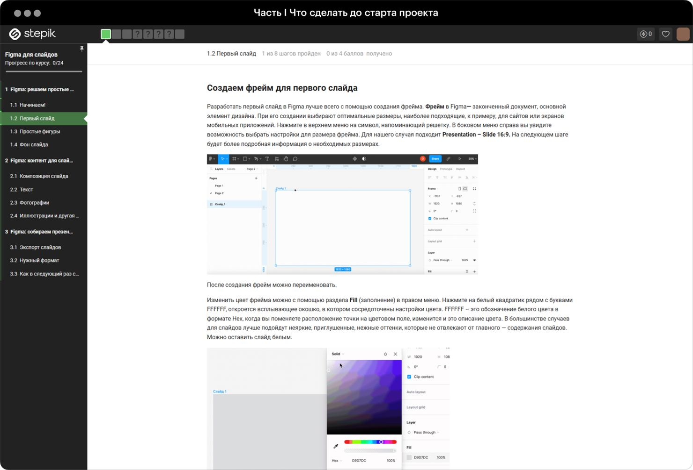
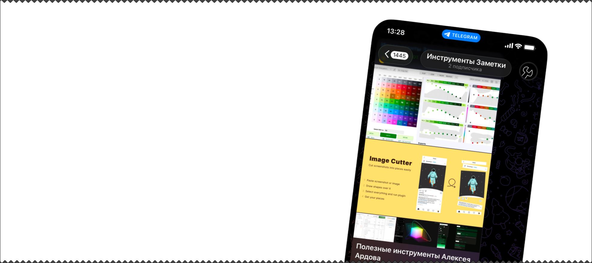
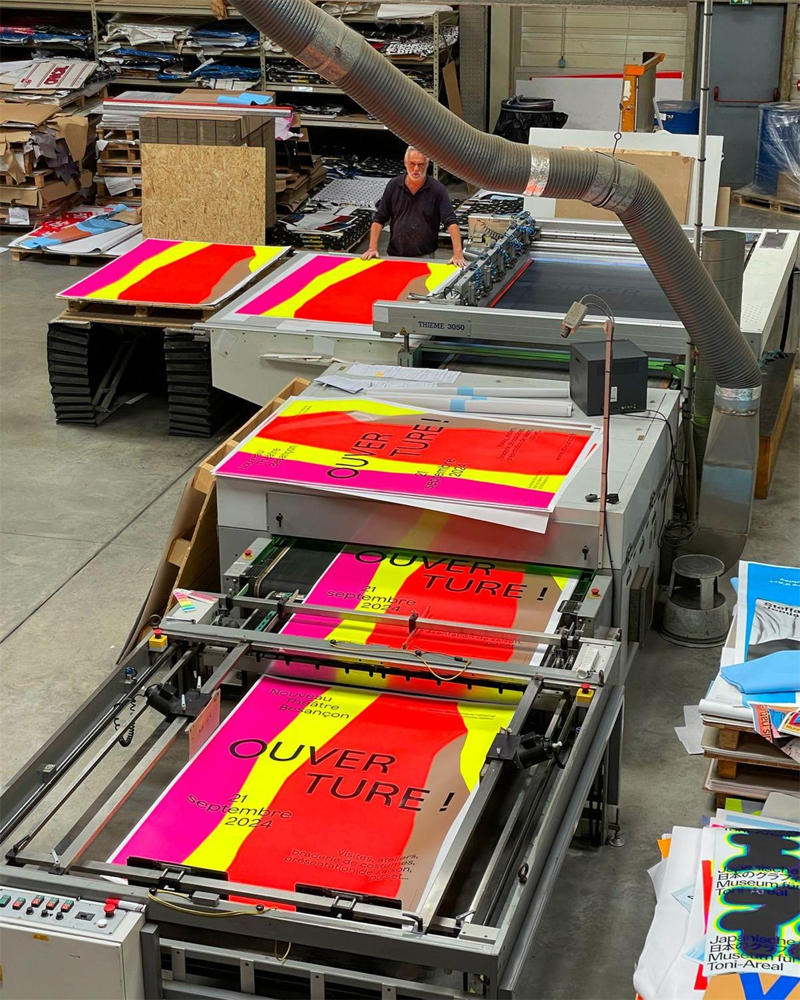
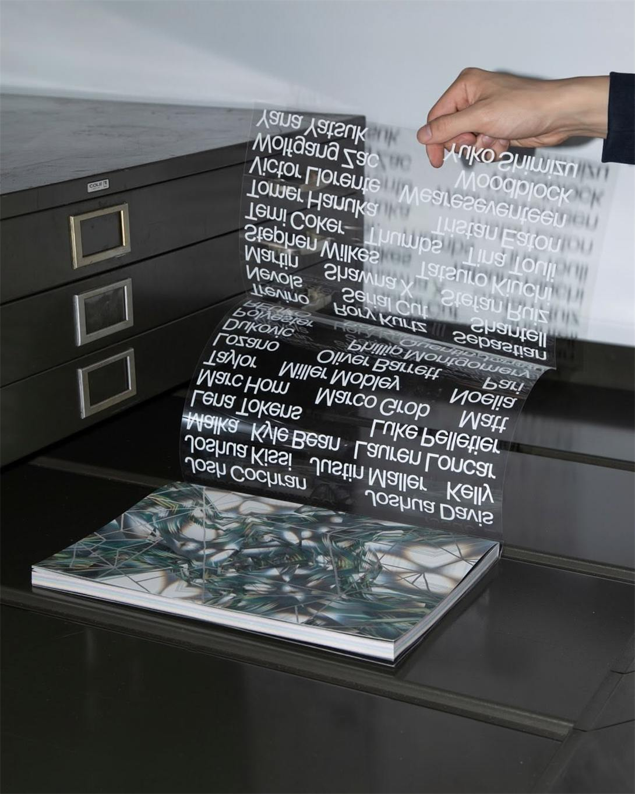
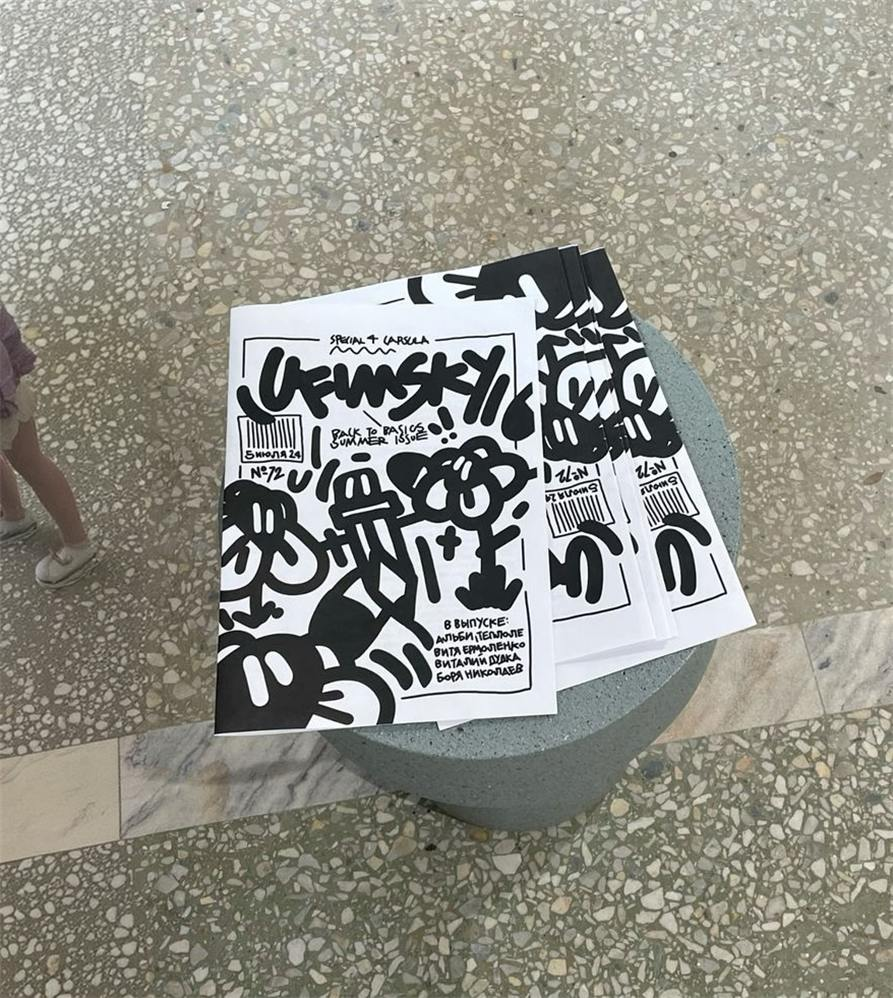
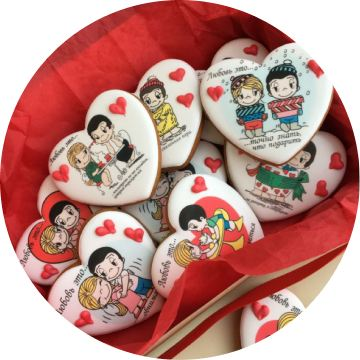

Онлайн-курс для дизайнеров и менеджеров
по работе с печатной продукцией
урс последовательно разбирает весь процесс
работы с печатной продукцией: от постановки технического задания до проверки макета и приёмки тиража.
Наша задача — дать набор универсальных инструментов и приёмов, которые можно применять в любом проекте и под любые требования типографий.
Гигиена файлов
Имена и версии: как не искать
«финал-финал-2»
Хранение и линки: чтобы ничего не терялось
Передача файлов и сопроводительное письмо
Бумага и материалы
Какие материалы бывают
Как выбрать материал
под свой проект
Типы печати
Офсет и цифра: главная развилка по тиражу, сроку и цене
Шелкография, УФ, сублимация, DTF: когда нужны спецспособы
Как выбрать способ под свой проект
Форматы и конструкции
Стандартные и нестандартные размеры. Что такое формат?
Развёртки и конструкции
Задача и её понимание
Вопросы клиенту до первого макета
Презентация макета и правки
Вопросы типографии: размер, цветность, вылеты, контур реза, формат файла
Цвет на экране и на печати
Цветовые профили
Сумма красок и глубокий чёрный
Оверпринт
Анатомия макета
Размеры и вылеты
Метки и контур реза
Обтравочные маски и структура печатного файла
Макеты с переменными данными
Макет в InDesign
Макет с помощью Клод
Экспорт
Из Фигмы в PDF, который примет типография
Экспорт из Иллюстратора и Индизайна
Финальная проверка PDF перед отправкой
Подготовка фото к печати
Разрешение: сколько DPI нужно на самом деле, чтобы не было мыла
Цветовой режим и формат файла для растра
Постпечатная обработка
Биговка, фальцовка, ламинация: как заложить в макет
Тиснение, вырубка, лак: спецотделка и её сроки
Предпечатный чек-лист
Проверка макета за десять минут: геометрия, вылеты, цвет
Проверка файла: шрифты, линки, формат, превью, отправка
Сигнальник, цветопроба и приёмка
Как организовать цветопробу
Сигнальник: проверка до запуска тиража
Приёмка тиража: как оставить брак в типографии
Монтаж
Макет крупной конструкции: деление на панели, швы, запасы
Допуски, материалы и работа с монтажниками
Итоги проекта и обратная связь
Курс на Степике: уроки с матчастью, практическими примерами, полезными инструментами и заданиями.
Урок «Цвет на экране и на печати» открыт для всех.

Для практики понадобятся
графические редакторы
Фотошоп, Иллюстратор,
Индизайн и Фигма.
После покупки доступ
к курсу остаётся навсегда .
Новые уроки, которые выйдут
позже, включены в стоимость.

Рассказываем о курсе, публикуем анонсы,
даём полезные советы по работе с печатью.




Для дизайнеров и менеджеров, которые готовят макеты в печать и отвечают за результат.
Кто берёт курс раньше — платит меньше. По предзаказу курс стоит 4 500 ₽. Когда выйдут все 15 уроков, цена станет 22 500 ₽. Каждый новый урок добавляет к стоимости 1 500 ₽
Нажмите «Оформить предзаказ» по кнопке ниже. Вас переведёт на страницу курса на Степик, где его можно приобрести по сниженной цене. Новые уроки будут появляться внутри курса автоматически.
Напишите автору в Телеграм — ответим и добавим частые вопросы сюда.
Курс
Включает доступ ко всем урокам, которые выйдут позже
Ранний доступ
Включает доступ ко всем урокам, которые выйдут позже
22 500
4500 ₽
ПредзаказУже доступны
Бесплатный урок о цвете
Предзаказ курса
12 октября
Выход всех уроков
из I Спринта
12 января
Выход всех уроков
из II Спринта
А дальше
Остальные уроки будут
выходить раз в месяц
Тогда почитайте открытый урок или задайте вопрос
авторам в Телеграме: @tuptoppppp.